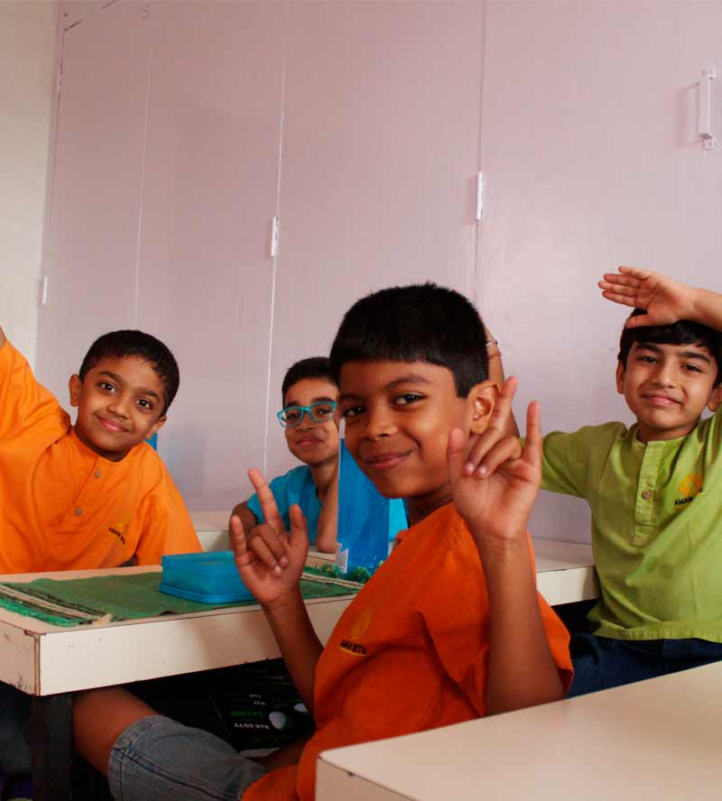
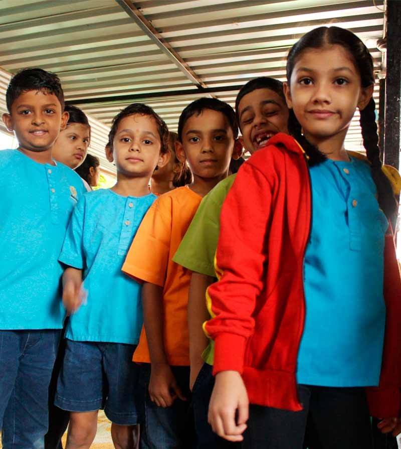

School Policy
We believe in engaging the children in all our processes thus inculcating in them a feeling of ownership and greater responsibility. Our school policies are designed and executed through a collaborative effort between the students and teachers.
Attendance
- While taking a planned leave, a prior application should be submitted to the class teacher.
- In case of a sick leave (more than 3 days) a doctor’s certificate must be sent to school.
- Any child suffering from an infectious or contagious disease should not be sent to school.
- Parents are responsible for completing the schoolwork that has been missed during leave/absenteeism.
- No exams or tests will be conducted again for those who are on leave/absent.
- Attendance is compulsory for events like Field trips, Concerts, Sports day, Independence Day and Republic Day.
- Children are not permitted to leave the school campus during school hours.
- Kindly fill “Absence record” page of the School Diary every time your child is absent from school.

Transport
- All children must travel in school bus.
- Self-Transport is only allowed for children residing within 3km. radius of school.
- Bus Fees are payable twice a year- For Non payment of fees - Transport facility will be stopped.
- In case of shifting residence /pick up point please fill the Bus Route Change Form and email it to feedback.amansetu.com.
- Whats app groups are maintained for each route and are to be used ONLY for bus Status /location / timing or any other official school updates or emergency communications.
Birthdays
- For school parties and birthdays, children can come in casual dress. Shorts are allowed (2-3inches above the knee).No sleeveless dresses/No spaghetti tops allowed.
- No distribution of sweets or gifts will be permitted in school.
- No invitations for birthday parties can be given in school.
- If the parents wish, a book can be donated to the school library on your child’s Birthday.


Food
- Healthy Vegetarian meals should be sent for Breakfast, Lunch and Snack.
- NO packaged food should be sent.
- Following the Food policy will lead to overall health improvement for all members of the school community.
Uniform
- Children should wear a clean and ironed uniform every day. PE uniform should be worn on PE days.
- All children must have the White school Kurta, and they will be notified when to wear it.
- For the First term children can wear black floaters.
- For the Second term children should wear white canvas shoes with white socks.
- Nails should be clean and clipped short, with no nail polish.
- Long hair should be tied neatly with functional and simple hair bands or rubber bands to keep it from coming over one’s face. No fancy clips and bands allowed.
- Short hair needs to be cut neatly. No spikes allowed.
- Children can wear normal classic watches from Class five onwards. Expensive watches, bangles, bands or bracelets should not be worn.